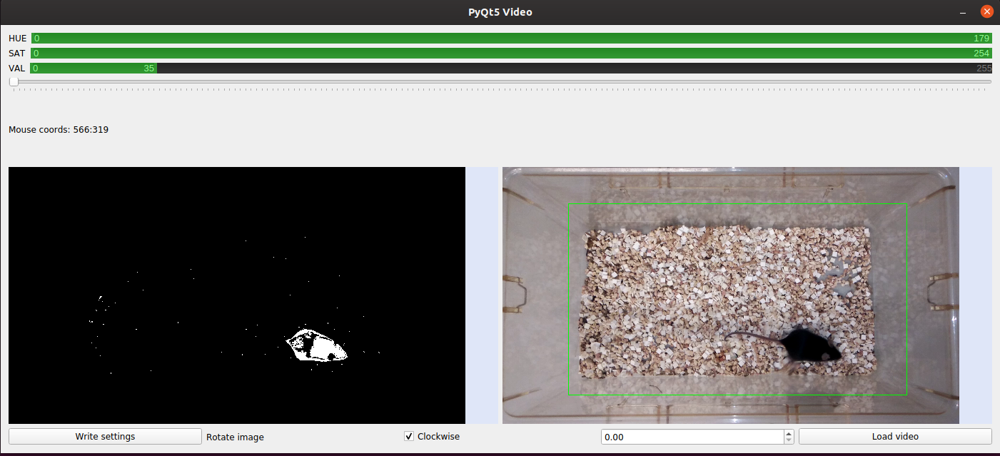
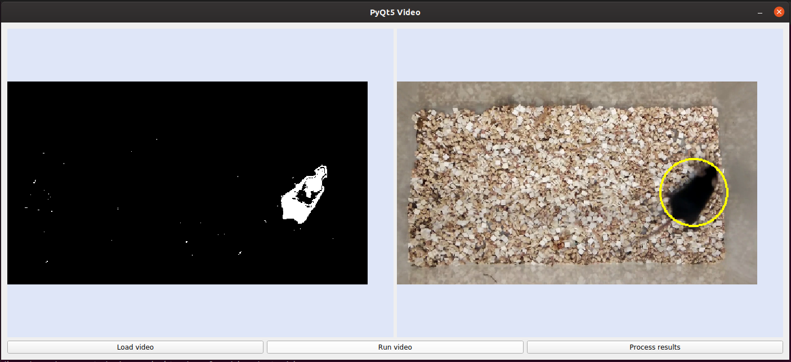
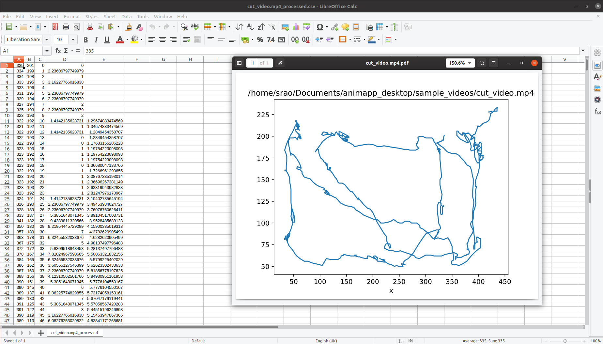

Animapp documentation¶
Contents
What is Animapp?¶
Animapp is a cross-platform package to analyse the movement of an object in a video. It leverages the powerful OpenCV framework to analyse videos and extract position information in each frame. This an be used in the field of biological research to track the movement of small animals and measure parameters such as distance and velocity.
Quick-start¶
Installation¶
This is described in detail on the Installation page:
conda config --add channels conda-forge
conda create -n animapp_env
conda activate animapp_env
conda install -c sraorao animapp
threshold
animapp
Videos¶
Animapp recognises files of the most common video formats (.mp4, .mkv, .avi) at a resolution of 640x480 or higher. In the current version, the videos are downsampled to 640x480. This may not be good if the object to be tracked in the video is too small relative to the field of view. If you are unsure, it may just be easier to give it a try.
Thresholding¶
The threshold program must be used first to record the following settings in a file named
settings.yaml in the working directory. This file may be manually created, but has to exist
before proceeding to the next step of analysis.
hue, saturation, value - set using the double sliders at the top of the threshold window
starting frame - set using the slider (useful when initial setup in the video interferes with object detection)
rotation - clockwise or anti-clockwise, set using numberbox at the bottom of the window
crop - left click and drag on the colour image to draw green rectangle denoting crop area
If you have a number of videos to analyse, running threshold on any one exemplar video
is sufficient, as long as the camera setup does not change between videos. If the camera
type, orientation, illumination in the room, etc. change between videos, the threshold values
are no longer valid (and it may also mean that the videos are not comparable, obviously!).
Hence it is essential to keep all the video variables consistent among all the videos that
are being analysed.
Analysis¶
Finally, run the animapp program to analyse the video(s) of interest. Click on the
Load video button to select the video (use ctrl+click to select multiple videos) and
on the Run video to start the analysis. Wait for the video(s) to stop running in the
window, this may take a while if you have a large number of videos but you can leave it
unattended. Once that is finished (you should see .csv files corresponding to each video
in the same folder as the videos), click on the Process results button to post-process
the results. This will give you another file with the suffix _processed.csv, and a pdf file.
Results¶
Three files are created in the same folder as the video, at the end of the analysis and post-processing.
.csv file¶
The raw .csv (Comma Separated Values) file contains the following columns (in that order):
x coordinate
y coordinate
Frame number
Bounding box coordinate
Bounding box coordinate
Bounding box coordinate
Bounding box coordinate
Bounding box angle
Only columns 1-3 are used for post-processing, but the bounding box parameters are there to be analysed if they are of interest.
_processed.csv file¶
Some frames may be missing in the raw csv (e.g. the frame number may jump from 5 to 10) due to aggressive thresholding or because the object is not in the field of the camera. These frames are then not recorded at all and the rows corresponding to those frames are missing. In these cases, the missing frames are filled in with the last recorded frame (in order to keep the distance accurate). This may seem like the object remained stationary for a long time, and then moved a long distance within a short time. If the number of missing frames is small, the estimated distance and velocity may not be far from the truth, but keep an eye out for the object being ‘lost’ in a large number of frames. The processed csv has the following columns in that order:
x coordinate
y coordinate
Frame number
Distance from the previous location (summing this column will give you total distance travelled in the entire video)
Rolling velocity - Rolling velocity is the distance travelled per 10 frames (NA for the first and last 10 frames)